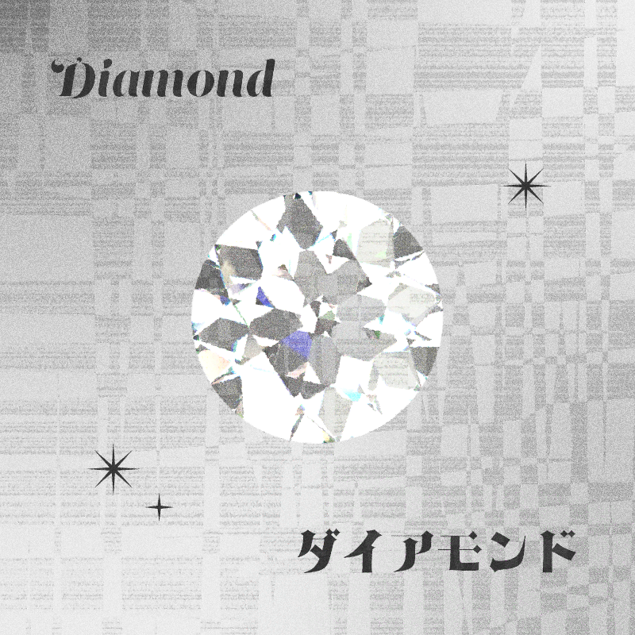
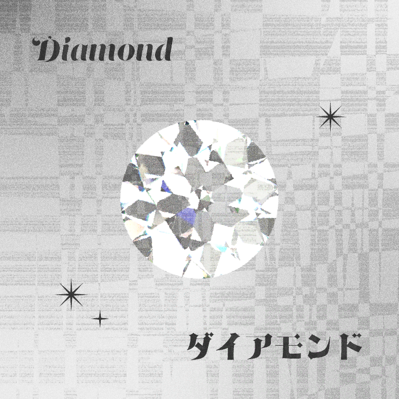

王子がにわかに叫びました。
「誰だ、今歌ったものは、ここへ出ろ」
するとおどろいたことは、王子たちの青い大きな帽子に飾ってあった二羽の青びかりの蜂雀が、ブルルルブルッと飛んで、二人ふたりの前に降りました。そして声をそろえて言いました。
「はい。何かご用でございますか」
「今の歌はお前たちか。なぜこんなに雨をふらせたのだ」
蜂雀はじょうずな芝笛のように叫びました。
「それは王子さま。私どもの大事のご主人さま。私どもは空をながめて歌っただけでございます。そらをながめておりますと、きりがあめにかわるかどうかよくわかったのでございます」
「そしてお前らはどうして歌ったり飛んだりしたのだ」
「はい。ここからは私どもの歌ったり飛んだりできる所になっているのでございます。ご案内いたしましょう」
雨はポッシャンポッシャン降っています。蜂雀はそう言いいながら、向こうの方へ飛び出しました。せなかや胸に鋼鉄のはり金がはいっているせいか飛びようがなんだか少し変でした。
王子たちはそのあとをついて行きました。
にわかにあたりがあかるくなりました。 今までポシャポシャやっていた雨が急に大粒になってざあざあと降ってきたのです。 はちすずめが水の中の青い魚のように、なめらかにぬれて光りながら、二人の頭の上をせわしく飛びめぐって、
ザッ、ザ、ザ、ザザァザ、ザザァザ、ザザァ、
ふらばふれふれ、ひでりあめ、
トパァス、サファイア、ダイアモンド。
 

ザッザザ、ザザァザ、ザザァザザザァ、
降らばふれふれひでりあめ
ひかりの雲のたえぬまま。
と歌いましたので雨の音はひとしお高くなり、そこらはまたひとしきりかがやきわたりました。
それから、はちすずめは、だんだんゆるやかに飛んで、
ザッザザ、ザザァザ、ザザァザザザァ、
やまばやめやめ、ひでりあめ
そらは みがいた
土耳古玉
。
と歌いますと、雨がぴたりとやみました。